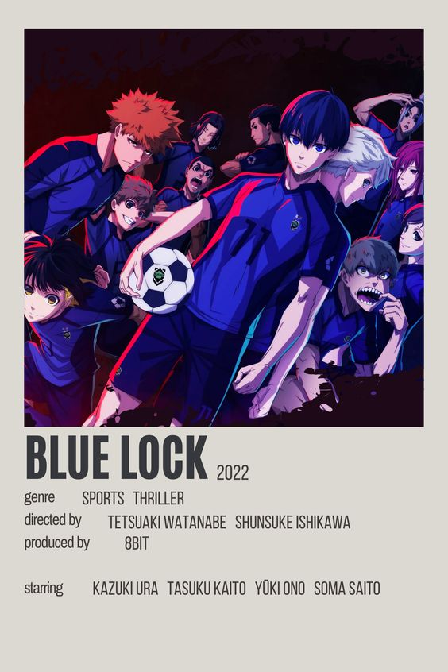

MAY 6,2023
Blue Lock
Blue Lock is a popular Japanese manga series that follows the intense and cutthroat
world of high school soccer and one young player's quest to become the best in Japan

MAY 6,2023
Chainsaw Man
Chainsaw Man anime is a blood-pumping and visually stunning series that follows the
twisted and darkly comedic journey of a devil hunter who wields a chainsaw as his weapon of choice.
MAY 6,2023
Vinland Saga
epic journey of Thorfinn, a young Viking seeking revenge and ultimately transforming
into a true warrior, in the beautifully animated and emotionally charged series that is Vinland
Saga.